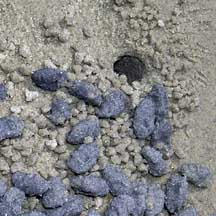
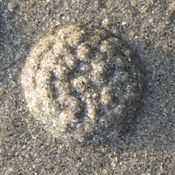
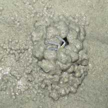
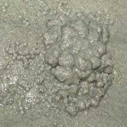
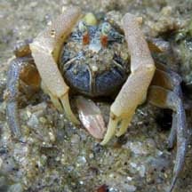
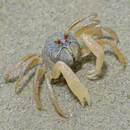
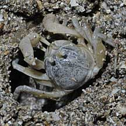

|
|
| crabs text index | photo index |
| Phylum Arthropoda > Subphylum Crustacea > Class Malacostraca > Order Decapoda > Brachyurans > Superfamily Ocypodoidea |
| Soldier
crab Dotilla myctiroides Family Dotillidae updated Dec 2019
Where seen? This amusing tiny ball-shaped crab with enormously elongated pincers is sometimes seen on natural sand bars. While the shy crab itself is seldom seen (it hides as soon as it senses footsteps far away), the balls of sand that it leaves on the shore at low tide indicate where it is active. To spot one, you will have to wait quietly next to a burrow. Stay low and avoid casting a shadow over the burrow. In a few minutes, it and its neighbours will appear. If you stay still, they will go about their amusing business Features: Body width to about 1.5cm. Body spherical, greenish eyes on short thick reddish stalks. Pincers very long, slender and folded downward with the claws pointed towards itself. The crab is well adapted for life out of water: it can absorb air through special parts of its legs which are thinner. It also absorbs water from the sand through silky hairs on the abdomen. Unlike most crabs, the soldier crab can run forwards as well as sideways. And it can move very fast indeed! Dotilla wichmani looks like other sand bubbler crabs. It is smaller (body width up to 1cm) and prefers sandier areas not wandering far from its hole. Dotilla myctiroides is larger (body width up to 1.5cm) and is found in muddier areas often moving around in large groups at low tide. This habit of 'trooping' in numbers gave these crabs their common name. |
 Chek Jawa, Nov 04 |
 Typical burrow with small and big sand balls around the opening. Chek Jawa, Feb 06 |
 'Igloo' built just before the incoming tide. Tanah Merah, Nov 11 |
| Burrowing in a bubble of air: A
study found that Dotilla myctiroides in wet semi-fluid
sand builds an 'igloo' of sand pellets by rotating itself, in order
to seal a bubble of air around itself in the wet sand. Beneath the
sand, the crab continues to scoop sand from below it and plaster the
sand above the bubble of air. In this way, the crab in its bubble
of air is able to burrow downwards. In more stable sand, the crab
builds a vertical burrow. What does it eat? The soldier crab eats the thin coating of detritus on sand grains. Sand grains are scraped up with the downward pointing pincers and brought to the mouthparts that then sift out any tiny food particles. The shifted sand is then discarded in a little ball. The bigger untidy balls are sand pellets dug out of the burrow. |
 Chek Jawa, Jun 07 |
 Creating an 'igloo' in wet sand with the incoming tide. |
 |
Status and threats: One of our soldier crab species (Dotilla myctiroides) is listed among the threatened animals of Singapore due to loss of our natural beaches. While somewhat common on Chek Jawa, they are not commonly seen elsewhere in Singapore. Like other creatures of the intertidal zone, they are affected by human activities such as reclamation and pollution. Trampling by careless visitors can also have an impact on local populations. |
| Soldier crabs on Singapore shores |
On wildsingapore
flickr
|
| Other sightings on Singapore shores |
 St. John's Island, Jan 09 Shared by Loh Kok Sheng on his blog. |
 Pulau Pawai, Dec 09 |
 Pulau Sudong, Dec 09 |
Links
References
|